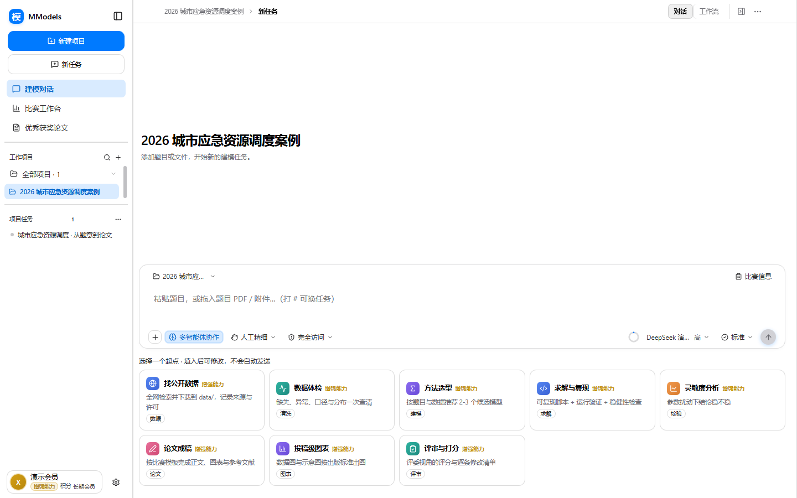

MModels 1.0.1 · 数学建模智能体工作台
把复杂题，交给一支
会协作的小队。
从题意解析、数据审计到模型求解、科研绘图和论文核验，15 个角色在同一个项目里交接。每一步有证据、每一份结果可复算，最后交付一篇真正能被复核的国奖级论文。
亮色客户端截图本地文件优先对话、工作流、论文同一项目

01先看清工作台一个项目，完整记录对话 · 文件 · 工作流 · 结果
SCROLL TO FOLLOW THE PROOF
15协作角色 / ONE CASE
59工具操作 / REPLAYABLE
19技能调用 / TRACEABLE
88亮色截图 / PRODUCT TOUR
一个演示项目的模拟回放
不是黑盒，是完整的过程。
01 / THE IDEA
不是把答案
生成出来。
好的建模工作，应该把问题变得清楚，把假设变得可见，把结论变得可追问。MModels 用项目、工作流和文件把这条链路留在桌面上。
“从一段题意，到一份有证据链的交付物，每一次转折都值得被看见。”
叙事版沿用产品真实界面和亮色截图，新增获奖级视觉节奏：先建立信任，再展开过程，最后把价值落到可复算的案例上。02 / THE CREW
一支小队，
不是一排卡片。
主控负责节奏，研究员提供依据，代码成员求解与复算，视觉成员把结果讲清楚，审计成员在提交前把每个细节拉回证据。

15 个角色 · 19 条交接
从左上角的问题边界，到右下角的复算交付，工作流记录的是协作关系，不是装饰性的流程线。
03 / THE CASE
把一道题，走完
从输入到交付。
城市应急资源调度是一个可复算演示：合成数据、本地 SciPy / HiGHS 求解、结果图表和论文结构都留在同一个项目里。
CASE STUDY / 2026
城市应急资源调度
三个仓库、四个服务区、需求情景与容量约束，最终得到成本改善 23.53% 的基线比较。每个数字都能回到输入、脚本和假设。

先把题意说清楚
读取资料，提取目标、变量、约束和验收标准，生成可确认的问题边界。
再让模型跑起来
保留基线、优化、需求情景与稳健性检查，所有脚本和结果放在项目文件中。
最后把证据交出去
科研图表、公式、引用、页数、匿名信息与复算材料一起进入论文交付审计。
随时回到任一步
对话、工作流、文件和结果相互指向，下一次修改不必从聊天记录里重新寻找上下文。
04 / THE PROOF
产品现场，
每一块都有证据。
把四种模式里分散的内容收拢成一条视觉证据链：输入、对话、图表和论文交付。打开原图，可继续查看 88 张亮色客户端截图。

对话记录 / 流程图INPUT → REASON → HANDOFF

科研绘图DATA → FIGURE

论文交付WRITE → AUDIT
05 / START WITH YOUR PROBLEM
下一道题，
从哪里开始？
下载 Windows 客户端，把题目、数据和目标放进一个项目里。先看过程，再决定要走多深。
联系与交流群
Mmodel-数模交流群
赛题讨论、使用交流与版本更新。

其他平台 · 待添加
微信 · 微信公众号 · 小红书 · B站 · 抖音 · 邮箱